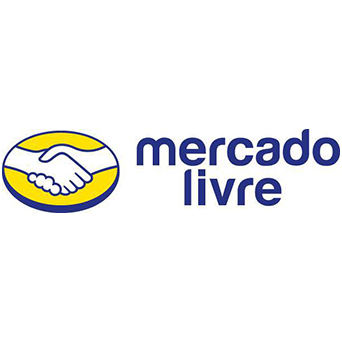

Lojas e Serviços mais conhecidos
Submarino é uma empresa brasileira. É uma das pioneiras no segmento de comércio eletrônico do Brasil, criada em 1999 e hoje, após fusão com a Americanas.com, é líder neste segmento. E é também uma loja virtual oficializada pela ABPD, juntamente IFPI.

Lojas Americanas (LASA) (BM&F Bovespa: LAME3, LAME4) é uma empresa brasileira do segmento de varejo fundada em 1929 na cidade de Niterói, no Rio de Janeiro, pelo austríaco Max Landesmann e pelos norte-americanos John Lee, Glen Matson, James Marshall e Batson Borger. A empresa conta com mais de 1.320 estabelecimentos de vendas em todo o Brasil. É a quarta maior empresa varejista do país, segundo ranking do Ibevar de 2015.

Amazon.com (NASDAQ: AMZN) é uma empresa transnacional de comércio electrónico dos Estados Unidos com sede em Seattle, estado de Washington. Foi uma das primeiras companhias com alguma relevância a vender produtos na Internet. Amazon inclui, igualmente, a Alexa Internet, A9.com, e a Internet Movie Database (IMDb). A empresa estava prevista para iniciar as vendas no Brasil dia 1 de setembro de 2012[5], mas não conseguiram firmar acordo com as editoras e o depósito onde ficaria os produtos, não estava pronto. A Amazon tinha data de estreia prevista em junho de 2013, mas a empresa conseguiu antecipar esse prazo e entrou no ar à meia-noite do dia 6 de dezembro de 2012. Comprou o site Box Office Mojo, um site estadunidense que acompanha as receitas mundiais.

A primeira loja da Netshoes foi fundada pelos primos descendentes de armênios Marcio Kumruian e Hagop Chabab em fevereiro de 2000. A loja localizava-se na rua da Universidade Mackenzie em São Paulo. Nos anos seguintes, a Netshoes abriu filiais em academias e shopping centers em São Paulo. Em 2002, a companhia iniciou as operações de e-commerce, e em 2007 fechou suas 7 lojas físicas migrando seus negócios para lojas virtuais. Dois anos depois, em 2009 a Netshoes patrocinou o time de futebol Santo André no Campeonato Paulista de Futebol.

O MercadoLivre é uma empresa de tecnologia que oferece soluções de comércio eletrônico para que pessoas e empresas possam comprar, vender, pagar, anunciar e enviar produtos por meio da Internet. Opera em 14 países e tem cerca de 1,6 mil funcionários. Possui um total de 95 milhões de usuários cadastrados confirmados, até 31 de setembro de 2013.
A OLX é uma empresa que atua em 118 países publicando anúncios classificados na Internet. Fundada em março de 2006 pelos empresários Fabrice Grinda e Alejandro Oxenford. Atualmente, é controlada pelo grupo sul-africano Naspers (50%) e também pelo grupo de mídia norueguês Schibsted (50%).No Brasil, desde 2010, a OLX se juntou ao seu concorrente Bom Negócio mediante acordo com a Schibsted no início de 2015. O acordo também se estende às operações em Bangladesh, na Tailândia e na Indonésia. Em Portugal, o site da OLX é gerido pela empresa FixeAds, igualmente detida pelo grupo Naspers, e que possui outros sites de compra, venda e serviços online como o Standvirtual, o Imovirtual, o Coisas e Faturavirtual bem como o OLX Moçambique e o OLX Angola.

PagSeguro é uma solução de comércio eletrônico para transações comerciais através de pagamentos onlines ou móveis. Com o PagSeguro, pessoas físicas ou jurídicas podem fazer compras e vendas seguras na internet ou receber pagamentos através da máquina de cartões (a Moderninha), do leitor de cartão de débito e crédito para celular e tablete (o leitor MINI). O PagSeguro faz parte do grupo Universo Online (UOL).